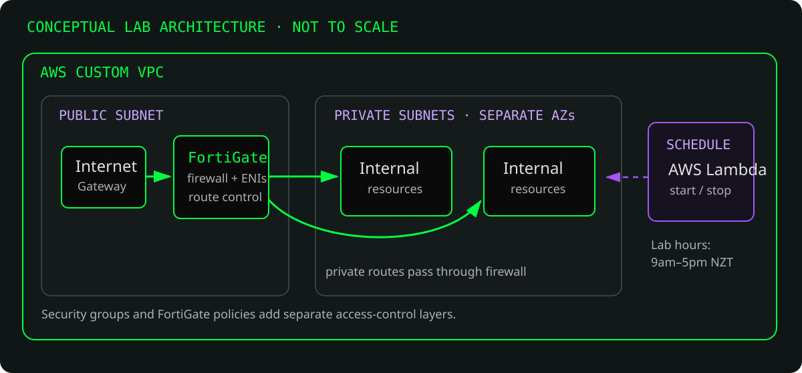

Individual academic project · CCC603 · Cloud Cyber Security
FortiGate Network Security in AWS
A hands-on cloud networking study in routing private subnet traffic through a FortiGate firewall and understanding how network design shapes security.
The question behind the project
How can a cloud network keep internal resources away from direct internet exposure while still allowing deliberate, inspectable traffic paths? I explored that question by designing a segmented AWS VPC and placing FortiGate at the network boundary for the lab.
The work combined architecture planning, AWS configuration, firewall access, scheduled operations and a written risk and continuity review. It is an academic proof of concept, not a production firewall deployment.
Architecture and traffic flow
The report describes a custom VPC with a public subnet for FortiGate and private subnets across availability zones for internal resources. Public-subnet traffic uses an Internet Gateway; private-subnet routes direct traffic through FortiGate for inspection. Network interfaces and AWS Security Groups provide additional control points alongside FortiGate policies.

Implementation explored
From subnet plan to firewall
- Created a custom AWS VPC and separated public and private subnets.
- Attached FortiGate network interfaces and configured source/destination-check behavior for routing.
- Directed private-subnet routes through FortiGate and used security groups with firewall rules.
- Used AWS Lambda to schedule FortiGate start and stop during the lab’s stated working hours.
Security and continuity
What I considered
- Keeping internal workloads off direct public routes and limiting access to required ports and trusted sources.
- Considering logging, monitoring and cost implications of a pay-as-you-go firewall instance.
- Identifying configuration errors, overly broad security groups, license status and monitoring gaps as risks.
- Documenting active-passive high availability, Infrastructure as Code and richer monitoring as future work; these were recommendations, not implemented project results.
What I validated
The assessment records access to FortiGate through its assigned public endpoint and a successful ping test from its command line to confirm internet connectivity. That test checked basic connectivity and routing; it does not establish full threat-detection coverage, high availability or production readiness.
The reflection also notes a key platform constraint: a FortiGate instance and its elastic network interfaces belong to one availability zone, which affects how interfaces can be arranged across a multi-zone network.
What stayed with me
This project made routing feel less abstract. A subnet boundary only helps when the route tables, firewall policy, interfaces and cloud security groups work together as intended. I came away more attentive to tracing a packet’s path one control at a time.
It also made the boundary between a working lab and a resilient service clearer: high availability, repeatable infrastructure, alerting and configuration backup need their own design and verification.